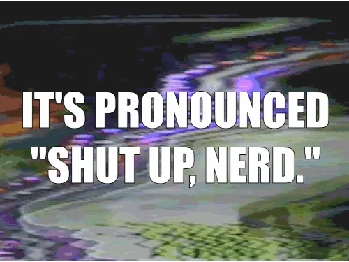
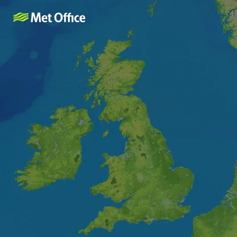
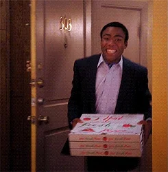

A Brief History of the GIF:
From Early Internet Innovation to Ubiquitous Relic
How an image format changed the way we communicate
LORRAINE BOISSONEAULT
JUNE 2, 2017
What do Barack Obama, the sloth from Zootopia, and a bear waving its paw have in common? All were named "most popular in 2016" for that most zeitgeist-y of Internet memes: animated GIFs. Since their creation 30 years ago, the looping clips have followed a rocky path to stardom, going from ubiquitous to repudiated and back again. Whether you love them or decry their infantilizing impact on language, it’s impossible to go long without seeing them on the news, social media, or even in office Slack rooms. Thanks to the humble GIF, no emotions are too big or small to capture in animated image form.

Developer Steve Wilhite and his team at tech giant CompuServe had a problem to solve: how to make a computer display an image while also saving memory. It was 1987, four years before the advent of the World Wide Web, when users who wanted to access email or transfer files did so with hourly subscriptions from companies like CompuServe. Then as now, the issue was space. How could a color image file be shared without taking up too much of the computer’s memory? Wilhite found a way to do so using a compression algorithm (more on this soon) combined with image parameters like the number of available colors (256). His new creation could be used for exchange images between computers, and he called it Graphics Interchange Format.
The GIF was born.
(For the record, Wilhite pronounces his creation with a soft G, using a play on the peanut butter ad as a demonstration: “Choosy developers choose GIF.” He reiterated the point when he was given a Lifetime Achievement Award at the 2013 Webby Awards. But that has hardly settled the debate, as many others insist on the hard “g” as in the word “gift” but without the “t”. Even dictionaries like Oxford English have unhelpfully declared both pronunciations valid.)
Initially, GIFs were used almost exclusively for still images. What made the format revolutionary was a specific compression algorithm, named Lempel-Ziv-Welch for its three creators (Abraham Lemepl, Jacob Ziv and Terry Welch). The way it worked was to identify repeating patterns, then simplify them, allowing for lossless compression of files—meaning none of the data is trimmed in the shortening process. As Eric Limer explains in Popular Mechanics:
[LZW] let computers invent a whole new phrase like ‘blite’ pixel for combinations like ‘a blue pixel, a white pixel,’ but also combo-phrases like ‘bliteple’ for ‘blite pixel, purple pixel’ and on and on, cramming more and more information into a single new word. This approach made the GIF uniquely talented at fitting photorealistic color images with their interwoven colors into small and practical packages.
Included in the file were multiple variations of the still image, which could be strung together to create a looping video, like a flipbook. The first example of this was a weather map. But when developers took to the World Wide Web in 1991, they mostly used still images. The first color picture online was even a GIF.
“GIF soon became a world standard, and also played an important role in the Internet community,” writes software developer Mike Battilana. “Many developers wrote (or acquired under license) software supporting GIF without even needing to know that a company named CompuServe existed.”
And therein lay one major problem: because the LZW algorithm that made GIFs possible was actually under patent, owned by a company called Unisys Corp. And in 1995, after years of developers having a free-for-all with their GIFs, suddenly Unisys wanted to make good on their patent. They announced they would be charging a small royalty (.45 percent and .65 percent on different products) for software that used the algorithm, including TIFF and PDF as well as GIF. Their patent wouldn’t run out until 2003 in the U.S. and 2004 everywhere else.
Developers’ reactions ranged from the practical—creating a new file format named PNG (at one point named PING for “Ping Is Not Gif”) that didn’t use the LZW algorithm—to the theatrical. On the latter end of this spectrum was “Burn All GIFs” day, held on November 5, 1999, when developers gathered together to delete their GIF files. “Burn All GIFs Day may be the first time in human history that anyone has ever thought it worthwhile to stage an organized political protest, even a small one, over a mathematical algorithm,” wrote The Atlantic at the time. Even though Unisys only asked large companies to buy licenses rather than individual non-commercial users, developers still felt like the patent was a threat.
GIF images were largely phased out, especially since other file formats now did a better job when it came to static pictures. But nobody else could fill one niche that GIF had cornered: animated images. And so, even as the Internet evolved beyond early HTML, the scrappy old GIF clung on for dear life.
“Before, GIFs were dressing up the content,” says Jason Eppink, curator of digital media at the Museum of Moving Images. GIFs were clip-art images and construction symbols, he explains. But now—“the GIF itself has become the destination.”
Part of the reason the GIF survived even after the GIF purge, Eppink thinks, is because it fit the DIY spirit of the early Internet. It was a small file, it could be downloaded and stored on individual servers, and nothing really came along to replace its animation style: that short, continuous, soundless loop.
“Like most digital media, it fills a need but it kind of also created the need,” says Kevin Zeng Hu, a Ph.D researcher at the MIT Media Lab. “We all know how unwieldy texting can be and how much context can be lost, especially emotional context. Once you make it visual, you have a higher bandwidth to convey nuance.”
Hu partnered with Travis Rich in 2014 to create GIFGIF, a project aimed at quantifying the emotions that come from certain GIFs. The site functions almost as an intentional A-B test, with users being asked to identify which of two GIFs better represents an emotion. To date they’ve received almost 3.2 million responses, and were impressed by the accuracy of the top GIFs for each emotion.
In the years since the project began, Hu says GIFs have become better indexed and are more easily usable, thanks to platforms like Giphy. Ironically, today many of the GIFs seen on sites like Twitter and Imgur are actually video files that have been coded to behave like GIFs, simply because new video technology is more efficient than the outdated GIF storage format. “It kind of transcended the file format to become a name for this specific cultural meme,” says Hu.
For Eppink, another unique aspect of GIFs is their lack of authorship and how divorced they become from their source material. Just because you’re familiar with a GIF—say, a kid at an old computer giving you a thumbs up—doesn’t mean you have any idea where that animation came from. “Most of the time when excerpts are used, they’re still the property of the thing they came from. There’s something interesting in GIFs in that they become their own entity,” Eppink says.
For now, GIFs are protected from copyright claims by fair use doctrine (which protects copying material for limited and transformative purposes), though that protection hasn’t been tested in court. In the past, sports associations like the NFL and the NCAA’s Big 12 conference have sent claims to Twitter about accounts using GIFs of sports events, and the International Olympic Committee unsuccessfully tried to ban GIFs from the 2016 Olympics.
Despite the uncertainty over the GIF’s legal future, it’s a cultural icon with staying power. GIFs have even appeared twice at the Museum of the Moving Image. In 2014 they hosted an installation on reaction GIFs, and this June they’ll have another exhibition dedicated to the animated images: a GIF elevator, its walls and ceiling covered in the looping pictures where visitors can be immersed in a single, perpetual moment.
“A successful GIF is one that is shared,” Eppink wrote in an article on the history of GIFs for the Journal of Visual Culture. “Even though individuals process the pixels, communities make the GIFs.”